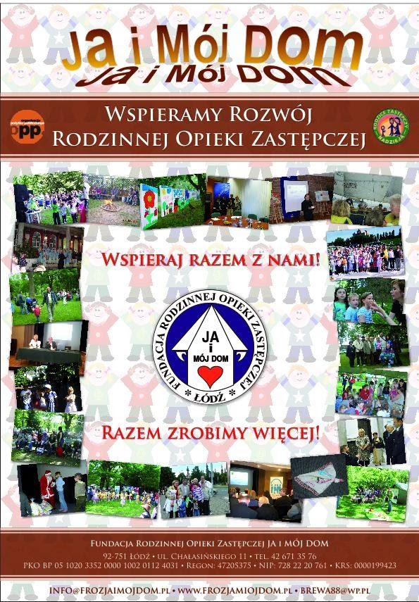

Kontakt
Fundacja Rodzinnej Opieki Zastępczej JA I MÓJ DOM
- Adresul. Chałasińskiego 11
92-751 Łódź
Zobacz na mapie - Telefontel. 42 671 35 76
- E-mailbrewa88@wp.pl
- Godziny otwarciagodz. otwarcia 9-17
- Internetwww.frozjaimojdom.pl
https://www.facebook.com/frozjaimojdom/
Dane Fundacji
Regon: 472053752
KRS 0000199423
PKO BP05 1020 3352 0000 1002 0112 4031
Nr KRS0000199423
Chcąc przekazać dla nas swój 1,5% podatku musisz znać nasz numer KRS, oto on 0000199423
